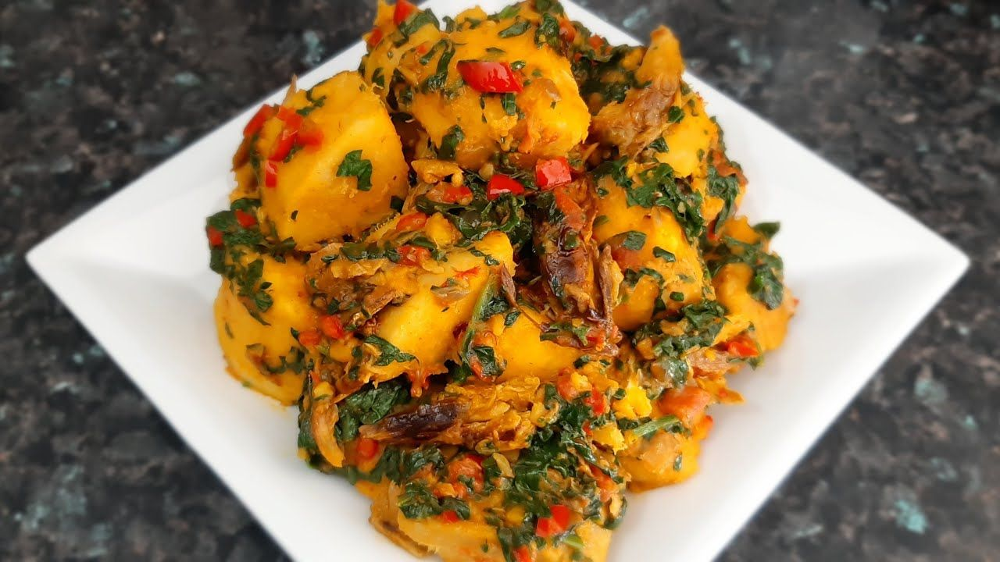

Yam-porridge

Description
Yam porridge is a common african food in nigeria. yam porridge is a very delicious yam recipe, it is eaten by most tribes in nigeria. however ...
Ingredients
- Yam
- Dry Fish
- Red Oil
- Onions
- Grinded Pepper
- Spices
- Water
Steps
- Cut and wash the yam
- Put yam in pot of water
- Allow to boil till soft
- Add in onions and grinded pepper
- Wash and add in dry fish
- Add red oil
- Allow to boil well
- Serve while hot